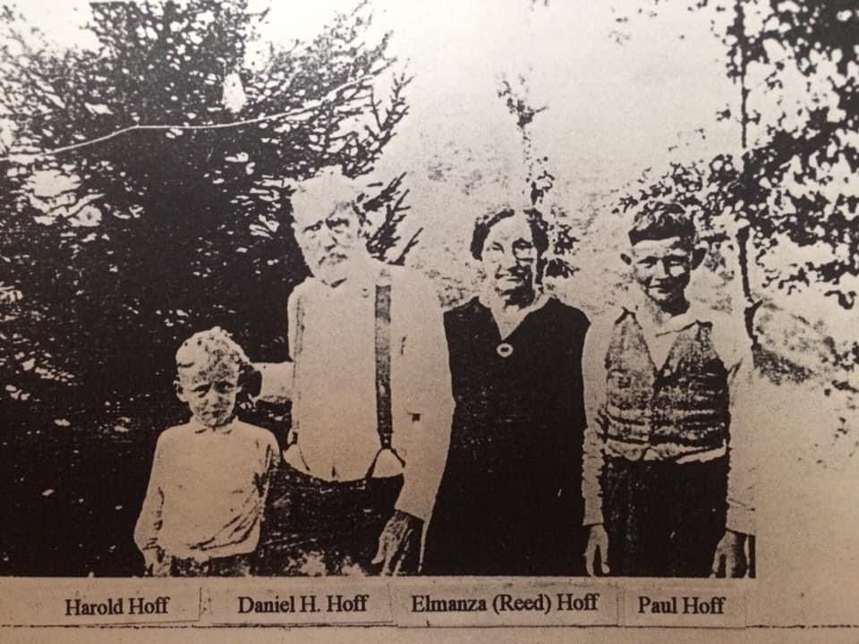
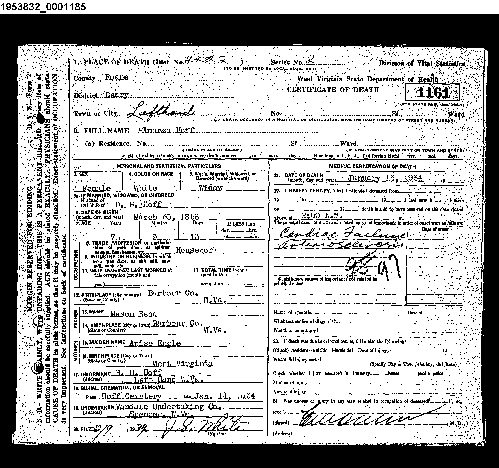

Hoff family · Roane County, West Virginia · wife of Daniel Homer Hoff
Quick Facts
Born
30 March 1858 · Barbour County, West Virginia (death certificate and contributor memorial)
Died
13 January 1934 · Left Hand, Geary District, Roane County, West Virginia (state death certificate image)
Last residence
Left Hand, Roane County, West Virginia (death certificate)
Buried
Hoff Cemetery · burial recorded 14 January 1934 (death certificate)
Occupation
Housework (death certificate)
Religion
Unknown
Immediate Family
Parents
Death certificate names father “Nason Reed” and mother “Anise Engle”; names differ from secondary spellings Nathan Isaac Reed and Annis Catherine Engle.
30 March 1858 Birth date and Barbour County appear on the 1934 state death certificate.
24 December 1879 Marriage transcription reports E. C. Reed, age 21, daughter of Nathan and A. Reed/Engle, married D. H. Hoff.
1892 A son’s birth register names mother Elmanza C. Hoff.
1910 Roane County household transcription lists Elmanza with Daniel and children Grover, Earl, Laura, Atlee, Grace, and Darrell.
13 January 1934 Died in Left Hand, Roane County; certificate gives husband D. H. Hoff, informant R. D. Hoff, burial Hoff Cemetery on 14 January.
Life Story
Elmanza’s 1934 West Virginia death certificate is a strong original record. It gives her birth as 30 March 1858, husband D. H. Hoff, father “Nason Reed,” mother “Anise Engle,” and informant R. D. Hoff of Left Hand. The digitized image is preserved in documents.
The Roane County marriage compilation reports the bride as E. C. Reed, daughter of Nathan and A. Reed/Engle. The certificate spells the parents “Nason Reed” and “Anise Engle.” Treat Nathan/Nason and Annis/Anise as variants, not silently normalized identities.
The census and linked-family group connect her to Harry and the other Hoff children; the broader sibling list is based on a shared tree and contributor memorials.
Photo Gallery

Caption identifies Daniel H. Hoff and Elmanza (Reed) Hoff between Harold and Paul Hoff; the relationships of the two younger men are not specified.

Certificate image attached to Find a Grave memorial; handwritten fields name Elmanza Hoff, husband D. H. Hoff, and informant R. D. Hoff.
The record’s parent names are “Nason Reed” and “Anise Engle”; contributor memorials use Nathan Isaac Reed and Annis Catherine Engle. The match is plausible from spouse, dates, and marriage transcription but the spelling difference remains explicit.
The shared-tree sibling list for Daniel/Elmanza is not a fully reconciled birth-by-birth family group. Jasper and Harry share the same indexed birth date; Flora and Grover share a year. Do not infer twin status.
The certificate image is hosted through a contributor-maintained memorial rather than retrieved directly from the county archive.